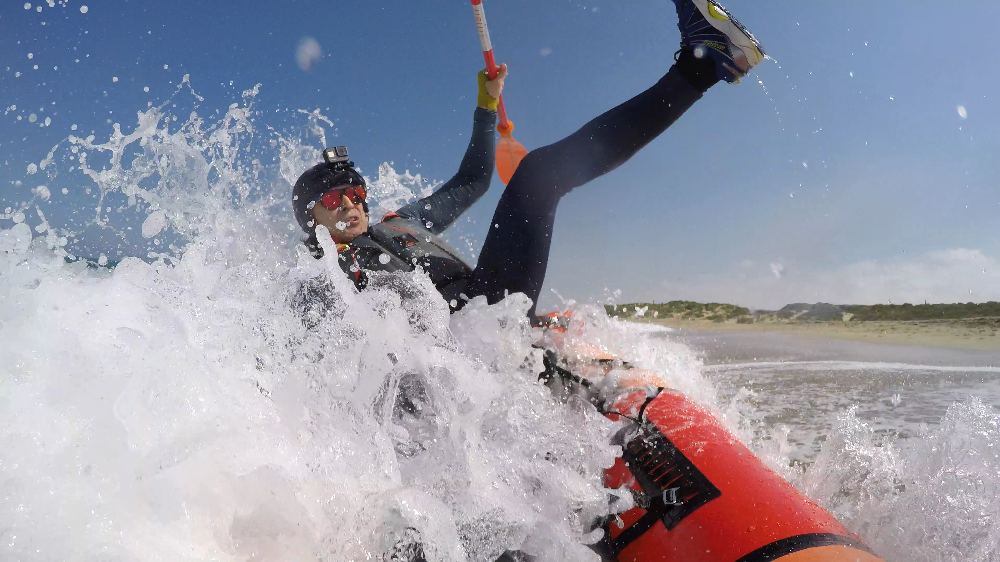
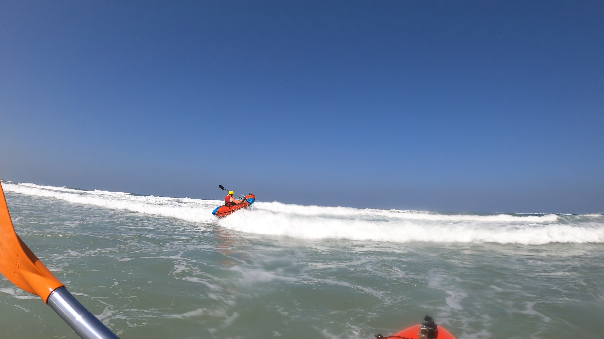

Пакрафтинг в Израиле
Уникальные водные приключения ждут вас!
Ощутите магию природы
Пакрафтинг – это удивительный способ исследовать природу Израиля с новой стороны. Сплавляйтесь по рекам, озерам и морским побережьям, наслаждаясь тишиной и красотой окружающей среды. Мы предлагаем незабываемые приключения для всех, кто хочет ощутить особую связь с природой.

Наши маршруты
Мы предлагаем разнообразные маршруты для пакрафтинга, подходящие как для новичков, так и для опытных путешественников. От спокойных сплавов по рекам до захватывающих приключений на бурной воде – у нас найдется что-то для каждого.
